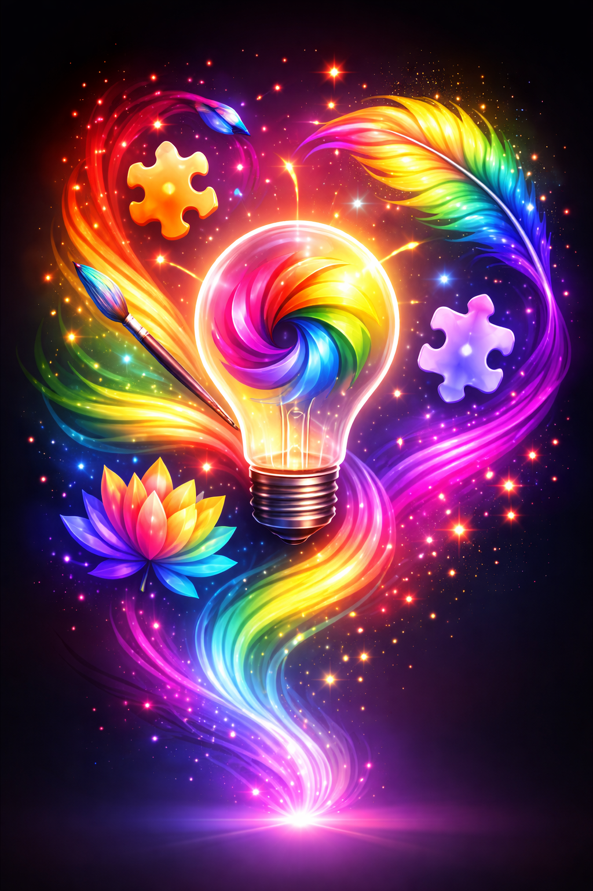
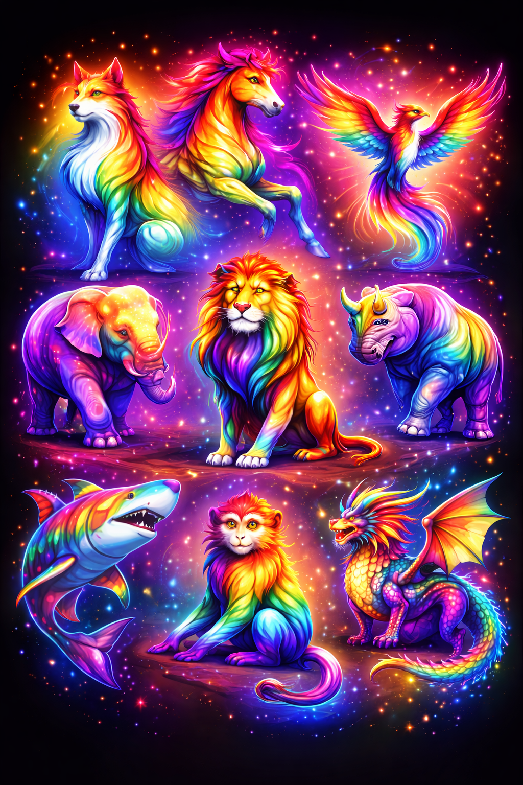

Timeline
Development of our spirit animals

Vision Established
1987
The initial idea took shape: a concept where symbolism, creativity, and identity converge into one powerful whole.
Development & Refinement
2019
The concept evolved through experimentation, research, and refinement. Stories, visuals, and meaning were unified into a clear direction.


Launch & Growth
2024
The vision became reality. With a strong visual identity and a clear message, the platform was launched and further developed for the future.